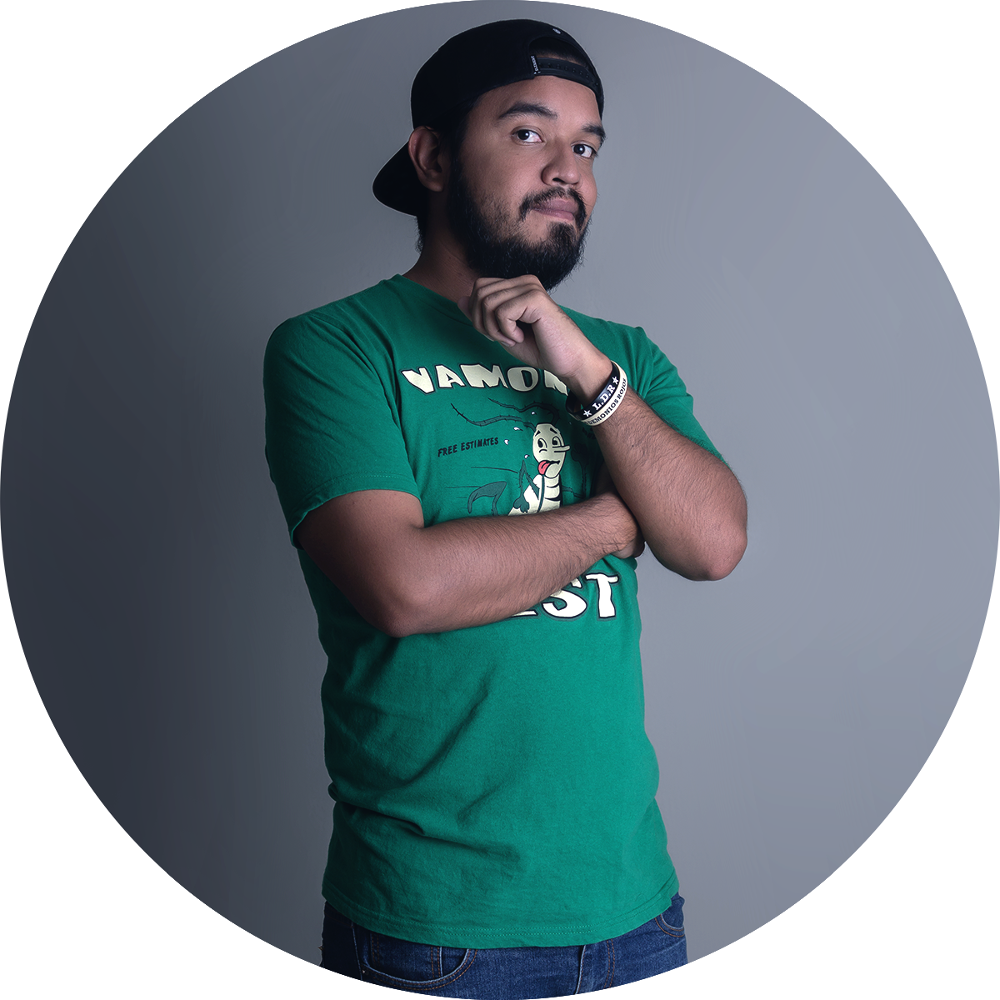

Luis M. Zurita
Cuento historias a través de fotografías, todos los sábados del año.
Mi nombre es Luis Miguel Zurita, nací en Coro, Edo. Falcón, Venezuela. Un apasionado por el cine (el buen cine), la cocina y los conciertos, que se dedica a contar historias todos los fines de semana.
Me considero un fotógrafo documentalista, sin dejar por completo a un lado el retrato. Hago todo lo posible por entregarle a mis clientes un trabajo único, diferente y de calidad.
Capturar momentos irrepetibles es un gran reto que decidí asumir hace un par de años, y desde entonces comenzó todo un proceso de preparación, no para ser el mejor, pero si ser mejor día a día.
Gracias a las bodas he podido recorrer gran parte del territorio nacional y hacer fotografías en lugares donde jamás pensé que estaría y eso es una de las cosas que más me motiva.

Contáctame
¿Crees que soy el fotógrafo ideal para ti?
Escríbeme, podemos hacer cosas increibles juntos.